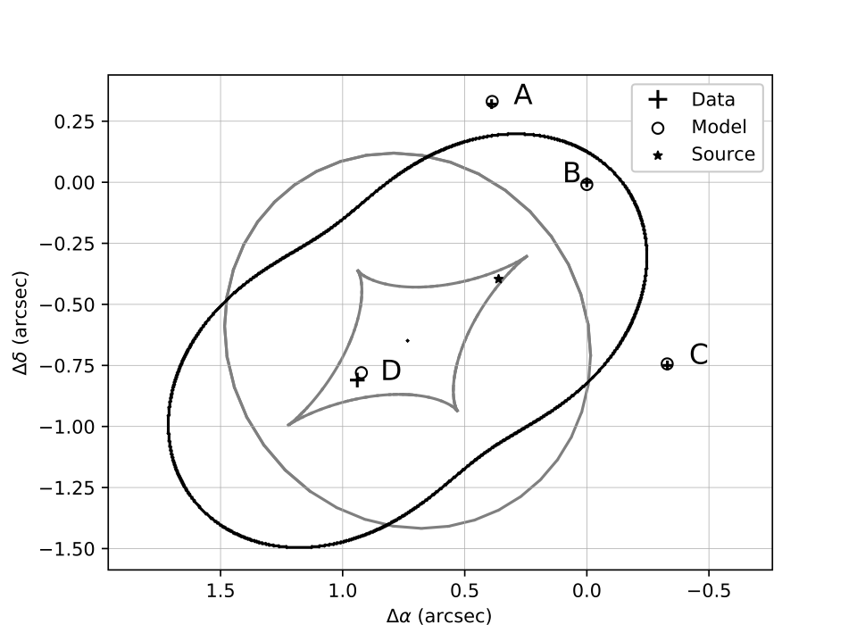
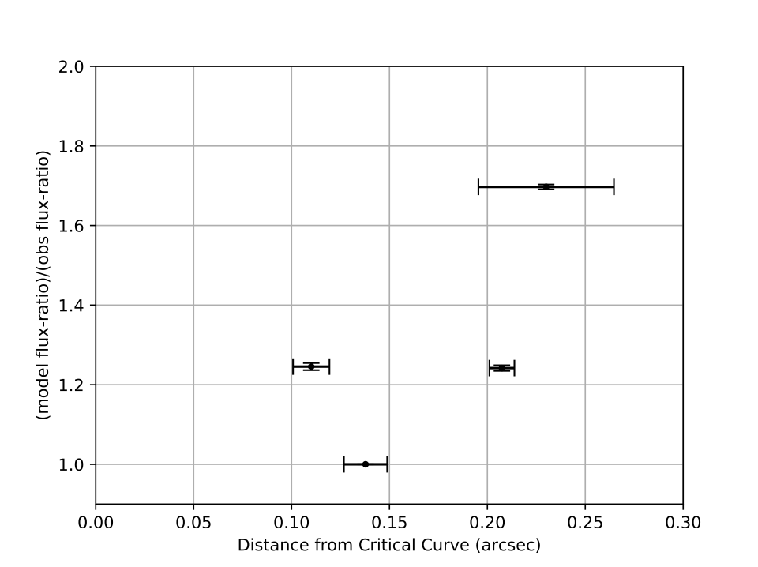
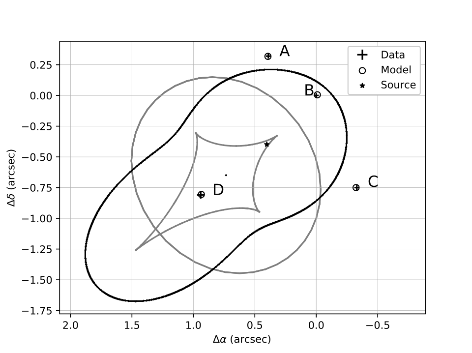
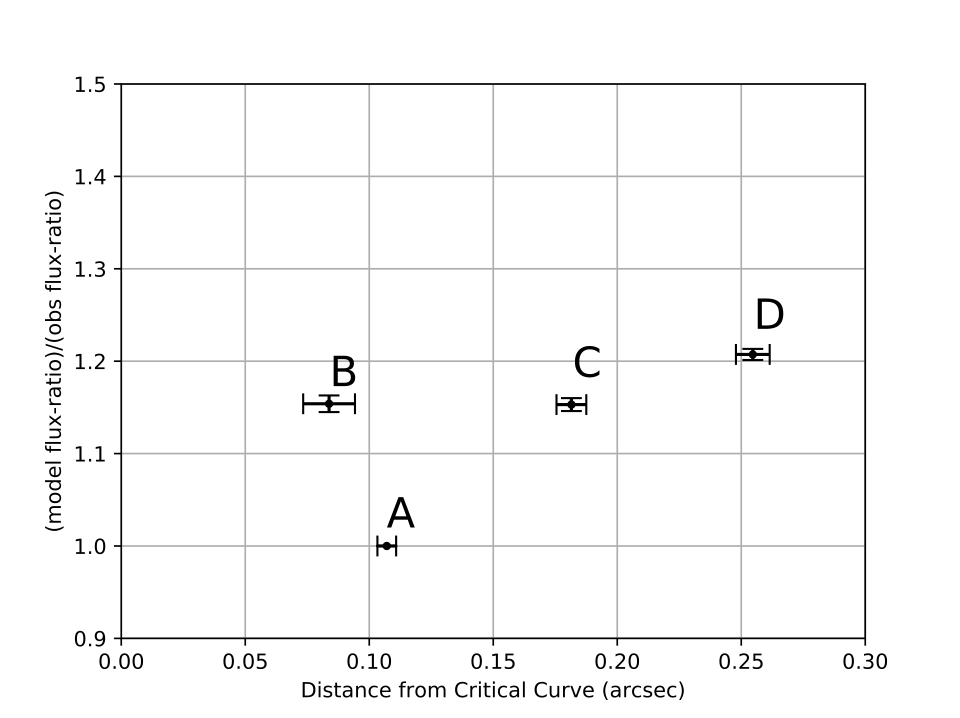
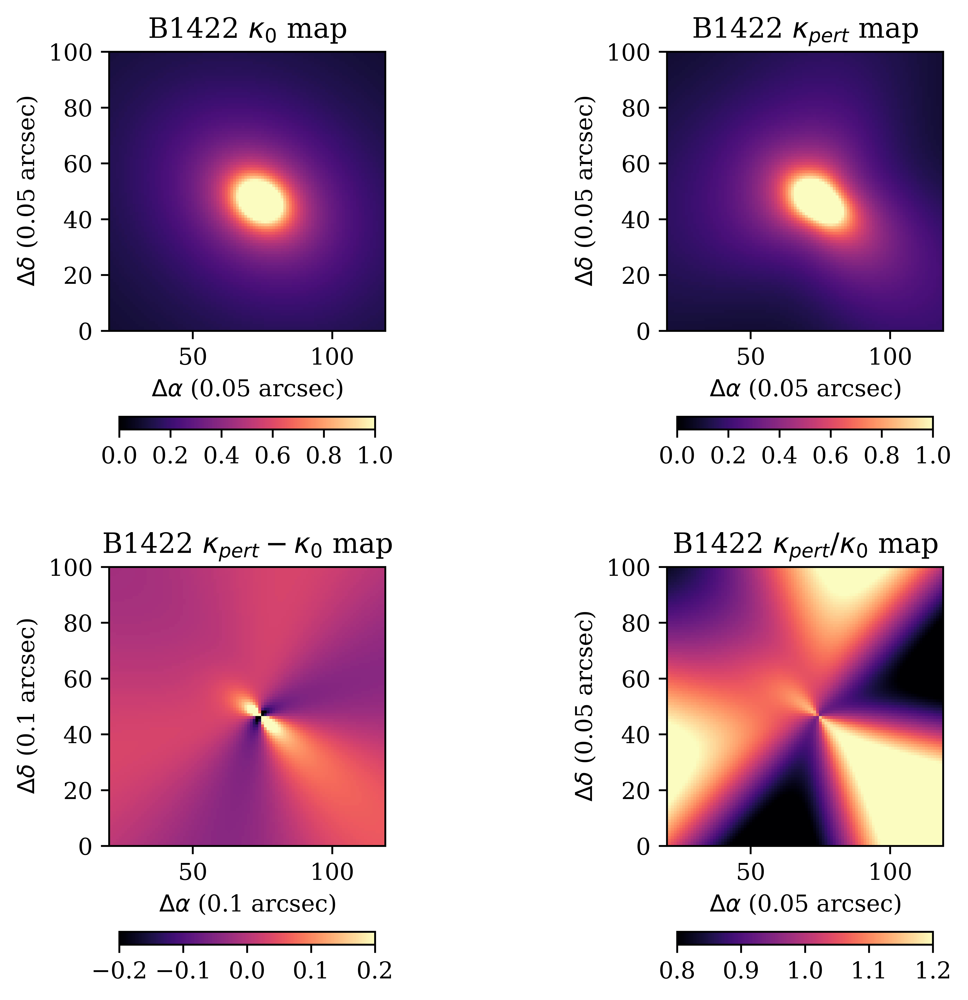

B1422
B1422 Models
Updated on 18-6-2019

The best-fit model with an SIE and external shear. (11 constraints and 7 free parameters)

The reproduction of flux-ratios is poor although the positions are reproduced relatively well. The images are in order B, A, C, D, starting from the critical curve.

Both 3rd order and 4th order perturbations were tried for B1422, but only 3rd order is significant. The position reproduction improves. (11 constraints and 9 free parameters)

The flux reproduction improves significantly for image D but only slightly for images B and C. And A is still predicted to be much dimmer than observation.

Mass (Convergence) maps of two models and their ratio. The images are reflected about the y-axis.